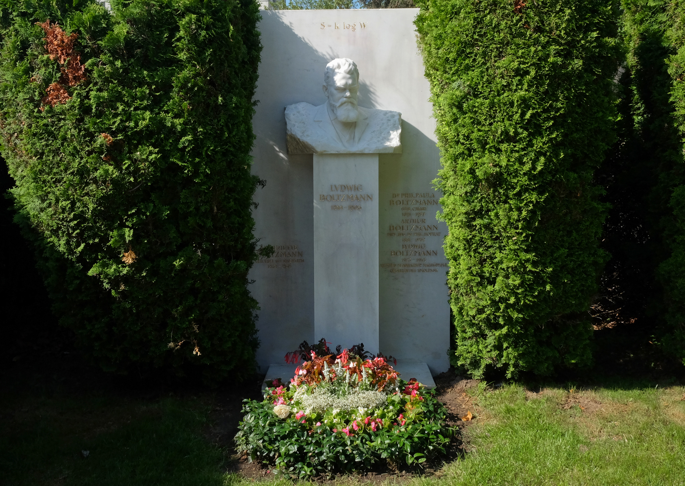

About Lud
He was an Austrian physicist and philosopher. His greatest achievements were the development of statistical mechanics, and the statistical explanation of the second law of thermodynamics. In 1877 he provided the current definition of entropy.
He is buried in the Viennese Zentralfriedhof. His tombstone bears the inscription of Boltzmann's entropy formula: S = k log W
Lud's Characteristics
- He was awsome
- He believed in atomism
- He was bipolar
Lud's Friends
Lud has amazing students. I think his best student was Lise Meitner(Einstein called her "German Marie Curie"), who had the idea for Nuclear Fission. You can click on the links below to read more about them: